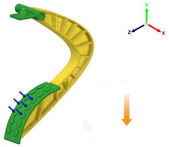

Richtet das Gussteil in der Gussform in der Richtung aus, die parallel zur Y-Achse der Dreiergruppe liegt und auf das negative Ende der Y-Achse zeigt.
Die Schaltflächen für die Auswurfrichtung ermöglichen das Festlegen der Formöffnungsrichtungen für eine Druckgussoperation. Die Formöffnungsrichtung wird mit Bezug auf das globale Koordinatensystem ausgerichtet.
 |
ANMERKUNG: Sie können mehr als eine Formöffnungsrichtung für eine einzelne Druckgusskonfiguration auswählen.